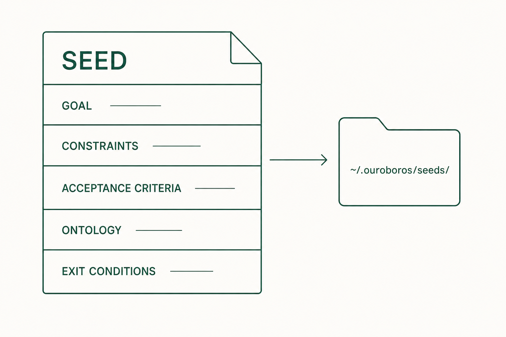

6. Seed
5장 Interview의 답은 Seed라는 작업 기준 파일로 정리됩니다. 실행 전에 이 파일이 자신의 답과 일치하는지 확인합니다.
6.1 무엇인가
Seed는 목표, 제약, 완료 기준, 데이터 구조를 담은 YAML 파일입니다. runtime은 이 파일을 기준으로 코드를 작성하고, 평가도 이 파일과 대조해 이루어집니다. 실행이 시작되면 그 실행 안에서는 내용이 바뀌지 않습니다.

6.2 생성
Claude Code 대화창에서, 5장에서 받은 session_id를 넣어 실행합니다.
ooo seed <session_id>정상 결과: Seed가 생성되고 ~/.ouroboros/seeds/ 아래에 YAML 파일로 저장됩니다.
아래는 예제 문답을 공식 Seed 필드 구조에 맞춰 구성한 가이드용 예시입니다. 실제 생성 결과는 저장된 파일에서 확인합니다.
goal: 오늘 할 일을 추가하고 완료 표시하는 웹앱 만들기
constraints:
- 한 기기에서 한 사람만 사용
- 브라우저 localStorage에 저장
acceptance_criteria:
- 빈 제목은 추가되지 않는다
- 할 일을 추가하면 새로고침 뒤에도 남는다
- 체크하면 완료 상태가 즉시 보이고 저장된다
ontology_schema:
name: TodoList
fields:
- name: title
type: string
- name: completed
type: boolean
metadata:
ambiguity_score: 0.156.3 필드별 확인
| 필드 | 내용 | 확인 방법 |
|---|---|---|
| Goal | 이번 실행이 만들 결과 | 사용자가 할 수 있어야 하는 일이 문장으로 적혀 있는지 봅니다. "예쁜 앱"처럼 판정 불가능한 표현은 고칩니다. |
| Constraints | 반드시 지킬 제한 | 기술·환경·범위 제한이 자신의 답과 같은지 봅니다. 예제에서는 한 사람, localStorage입니다. |
| Acceptance Criteria | 완료 판정 기준 | 각 항목이 화면이나 테스트에서 직접 확인 가능한 문장인지 봅니다. 8장 평가가 이 기준과 대조합니다. |
| Ontology | 다루는 데이터의 구조 | 필드 이름과 타입이 기능과 맞는지 봅니다. 예제는 제목(문자열)과 완료 여부(불리언)입니다. |
| Evaluation Principles | 평가에서 중시할 원칙 | 완성도 등 평가 기준의 비중이 의도와 맞는지 봅니다. |
| Exit Conditions | 작업 종료 조건 | 어떤 상태가 되면 끝나는지 적혀 있는지 봅니다. |
Non-goals(이번에 만들지 않기로 한 일)와 질문 과정의 가정은 Seed 본문이 아니라 Ledger라는 별도 기록에 남습니다. "단일 사용자"가 사용자의 답인지 확인하고 싶을 때 이 기록을 봅니다. 공식 문서 기준으로 독립 터미널의 ouroboros auto --show-ledger가 이 내용을 출력합니다.
6.4 A등급
Seed에는 실행 가능 여부를 판정하는 등급이 있습니다. ooo auto는 A등급 Seed만 실행을 시작합니다.
| 등급 | 뜻 |
|---|---|
| A | 차단 사유와 보완 지적이 없고, 커버리지·모호성·검증 가능성·실행 가능성·위험 점수가 모두 기준을 통과한 상태. 실행 가능 |
| B | 차단 사유는 없지만 보완할 지적이 남은 상태. 수리 후 재판정 |
| C | 차단 사유가 있는 상태. 실행 불가 |
6.5 수정
Seed가 자신의 답과 다르면 실행 전에 고칩니다. 예를 들어 "완료한 일은 남긴다"고 답했는데 삭제로 적혀 있다면 수정 대상입니다. Claude Code 대화창에서 고칠 내용을 말하면 변경안이 제안되고, 사용자가 승인하면 반영됩니다. 저장된 YAML 파일을 직접 편집할 수도 있습니다.
6.6 실행 전 확인표
- Goal이 자신이 만들려는 것과 일치한다.
- Constraints가 자신의 답과 일치한다.
- Acceptance Criteria 각 항목을 직접 재현할 방법이 떠오른다.
- Ontology 필드가 기능에 필요한 데이터와 일치한다.
- ambiguity_score가 0.2 이하다.
모두 확인했다면 7장에서 실행합니다.